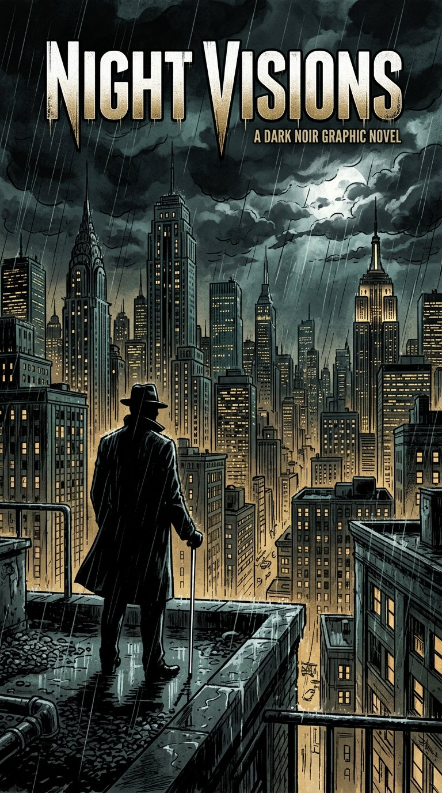

Capital City Streets. Main menu. 7 options. Use arrow keys to navigate, Enter to select. Press V to toggle voice.

Capital City Streets
You are Stoneface. The truth about your sister's murder won't bury itself.
Main menu
🔊
Smart Glasses narration on — press V to toggle
↑ ↓ arrows or Tab · Enter to select · V = toggle voice
Select chapter
Settings
🔊
Smart Glasses narration
Spoken narration of every line and option
⏩
Narration speed
How fast the Smart Glasses speak
100%
🎼
Music volume
Generative score loudness
100%
🌆
Ambience volume
Room tones, rain, city life
100%
🌓
High contrast
Brighter colors, stronger outlines — key H anytime
🎧
Focus Mode
Dims visuals during play — press F anytime in game
🦯
Blind-Friendly Real Audio — OpenGameArt.org
Real noir jazz (Future Noir, Velvet Sax, Noire Crime Time) + real punch SFX + footsteps + city ambience. For blind immersion — CC0/CC-BY
🎵
Real Music Volume
Noir jazz tracks from OpenGameArt.org
70%
🥊
Real SFX Volume
Real punch, footsteps, doors from OpenGameArt.org
90%
🎙️
Real Human Voices — Not Computer!
Stoneface, Glasses, Salena, Sam, Priest now sound like REAL people, not computer TTS. Generated with AI voice actors. Hybrid: real for main, improved TTS for others.
🔊
Realistic Sounds — Mixkit / OGA CC0
Real recorded footsteps (grass, stone, sand, concrete), punches (strong, fast, body), doors, city rain, coins, swords. CC0 realistic, not synthetic. From Mixkit-style packs.
🎚️
Realistic Volume
Footsteps, punches, doors, city - realistic SFX
90%
🎼
Professional Blind Music Vibe — High Level
Leitmotifs (character themes), Vertical Remixing (base+tension+combat layers), Stingers (objective/danger), Sonar Enhanced Listening, Binaural spatial music. Like TLOU2 + Hades + A Plague Tale. Real noir jazz from Pixabay CC0 + OGA.
🎹
Blind Music Volume
Leitmotifs + vertical layers + stingers - professional blind vibe
60%
📡
Enhanced Listening Mode (Sonar)
Sonar sweep like TLOU2 - press E in game to ping nearby characters/objects with spatial audio + leitmotifs. For blind navigation.
Credits — Meet the crew
- 🕶 StonefaceYou — blind crew leader, grief sharpened into purpose
- 🚙 BonnieBulletproof SUV — crew-built, AI-voiced
- 📞 Sam CaldwellInside-cop ally — your eyes inside the law
- 🕯 Priest MalachaiMoral compass — the only honest gatekeeper
- 🏀 Marcus "Harbor" KaneNavy Seal — undercover in plain sight
- 🗡 Nyx & Nia ValeTwin assassins — point them
- 💰 Elias "Ledger"Pawn shop investor — upgrade broker
- 🔧 Tess "Area Six"Computer engineer — builds Bonnie's systems
- 🏝 Seraphine "Sera"The island — a romance you choose
- 🏛 Mayor WexlerCharismatic, ruthless, addicted to legacy
- 🚔 Chief VossCold, procedural — the city is his, he thinks
🖤
A Paschall Games production
Designed accessibility-first · Hand-built noir engine: WebAudio generative score, HRTF spatial sound, Three.js streets · Every voice synthesized, every pixel data-driven · For Salena.
🏙 Capital City Streets
It is now safe to close this tab. Justice is coming — one block at a time.